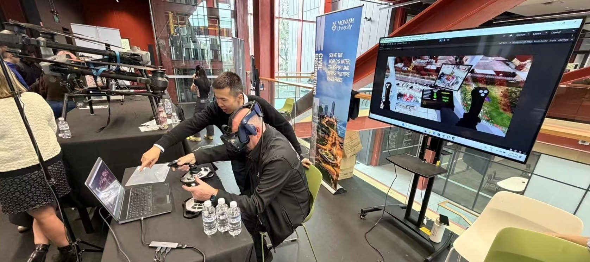

On 6 May 2026, ICON Lab supported the organisation of the Monash University Engineering Faculty Specialisation Event, where prospective students explored research and learning opportunities across the faculty. During the showcase, Yizhe presented our research on high-fidelity simulation of crane lift operations.
